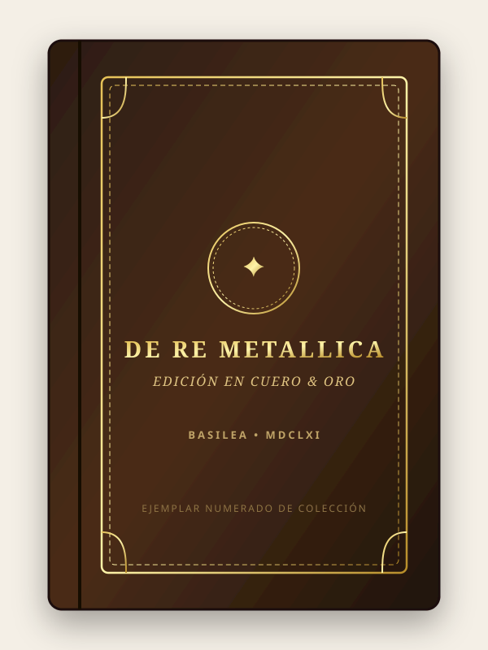
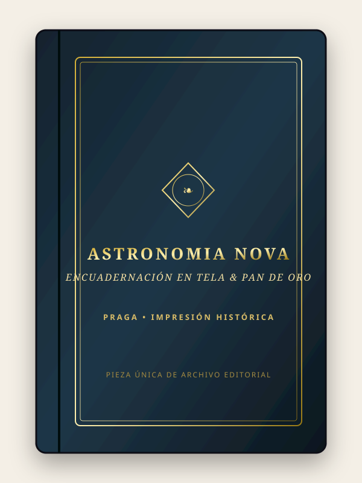

Edición de ColecciónDe Re Metallica
Tratado renacentista de valor patrimonial incalculable. Incluye xilografías originales de época, tipografía gótica-romana y cantos decorados a mano.
Una librería independiente y espacio de pensamiento para descubrir historias, ideas y conversaciones que perduran. Un punto y seguido para cada lectura.
“Un libro leído nunca está cerrado del todo; espera en silencio a su próximo cómplice. Creemos en la lectura como un punto y seguido: un puente entre quienes ya se deslumbraron con estas páginas y quien está a punto de abrirlas por primera vez.”
Más que un catálogo comercial, hemos creado un foro literario contemporáneo: reseñas críticas redactadas por nuestros lectores, columnas de fondo, reflexiones de escritoras y escritores invitados, y una biblioteca digital abierta para consultar obras libres de derechos.
Una muestra seleccionada de nuestros volúmenes más preciados: ediciones de colección, encuadernaciones históricas y libros singulares disponibles únicamente para adquisición física en nuestra librería.

Edición de ColecciónTratado renacentista de valor patrimonial incalculable. Incluye xilografías originales de época, tipografía gótica-romana y cantos decorados a mano.

Pieza ÚnicaLa obra que reformuló las leyes del movimiento planetario. Ejemplar conservado con sus tablas diagramáticas desplegables intactas y papel de tina original.
Estas ediciones históricas son solo una pequeña muestra de lo que atesoramos. En nuestras mesas y estanterías físicas conviven miles de libros de narrativa, poesía, filosofía, teatro y ensayo esperando a que alguien los devuelva a la vida.
Amamos los lomos gastados con dignidad, las dedicatorias anónimas escritas a lápiz hace décadas y el perfume inconfundible del papel noble. En Punto y Seguido cada ejemplar no es solo una lectura maravillosa a precio asequible: es formar parte de una cadena invisible y optimista de lectores que se prestan la palabra a través del tiempo.